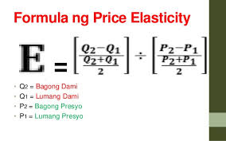
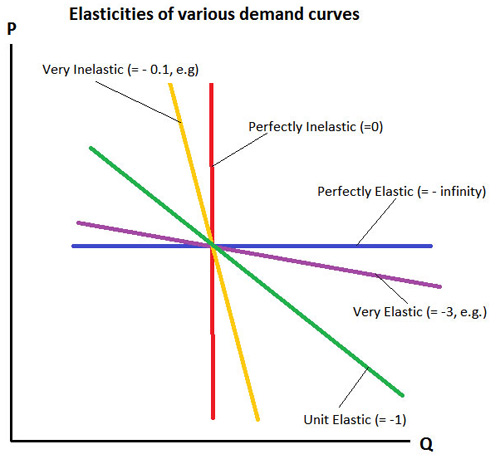

Lesson 3 - Price Elasticity
- Elastidad ng Demand at Supply
- Ang elastisidad ay isang pamamaraan upang masukat ang pagtugon ng mga mamimili at nagtitinda sa pagbabago ng presyo at kung gaano kalaki ang epekto nito sa dami ng produkto o serbisyo.
- Elastisidad ng Demand
- Ito ay pagsukat ng porsiyento ng pagtugon ng tao sa bawat pagbabago ng presyo at kung paano naaapektuhan ang dami ng produkto na gustong bilhin ng mamimili.
- Elastisidad ng Supply
- Ito ay tumutukoy sa antas ng pagtugon ng mga nagtitinda sa pagbabago ng presyo ng produkto o serbisyo at kung gaano kadali o kahirap dagdagan ang suplay.


- Uri:
- Elastik (Elastic)
- - Ang demand o supply ay nasasabing price elastic kapag mas malaki ang naging bahagdan ng pagbabago ng dami kaysa sa pagbabago ng presyo (coefficient > 1); halimbawa: mga produktong maraming kapalit tulad ng softdrinks o sabon.
- Di-Elastik (Inelastic)
- Ang demand o supply ay price inelastic kapag maliit ang naging bahagdan ng pagtugon ng QD/QS kaysa sa bahagdan ng pagbabago sa presyo (coefficient < 1); halimbawa: mga pangunahing pangangailangan tulad ng bigas at gamot.
- Unitary
- - Kapag pareho ang bahagdan ng pagbabago ng presyo at pagbabago ng QD; halimbawa: ilang produkto sa merkado na may balanseng tugon sa presyo.
- Ganap na Elastik (Perfectly Elastic)
- - Kapag anumang maliit na pagbabago sa presyo ay nagdudulot ng walang hanggan o infinite na pagbabago sa QD/QS; karaniwang nangyayari ito sa mga produktong may maraming kapalit.
- Ganap na Di-Elastik (Perfectly Inelastic)
- - Kapag hindi nagbabago ang demand kahit nagbabago ang presyo (E = 0); halimbawa: mga gamot o produktong kailangan para mabuhay.
< back to the AP home page